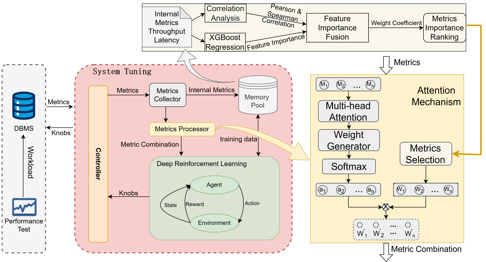
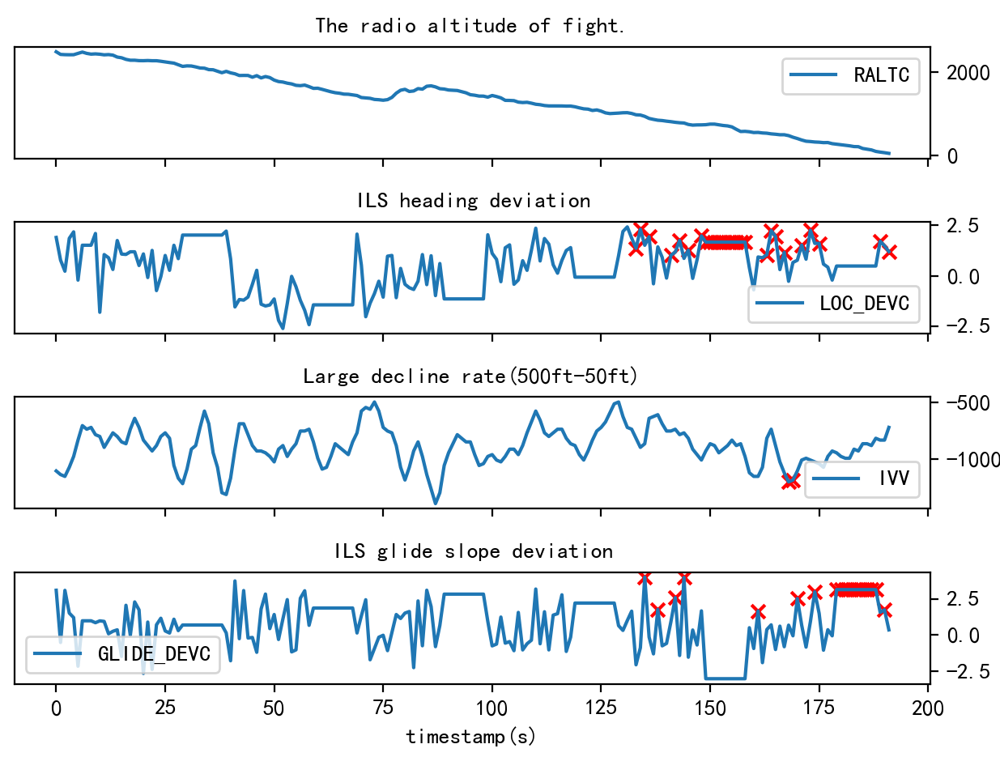
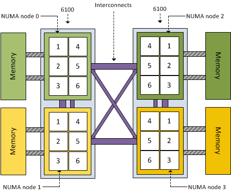
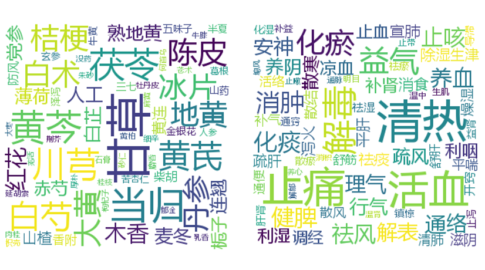

研究方向
大数据分析技术及行业应用
研究大规模数据的查询处理技术，包括分布式查询优化和新硬件环境下的查询优化等关键技术.在物联网、民航飞行品质监控领域开展行业应用.
数据库系统智能优化技术
基于机器学习、深度学习、大语言模型等先进的人工智能技术，研究数据库系统智能优化技术，包括系统参数优化、查询优化、索引优化等.
多模态数据分析
研究文本、图像等非结构化数据的管理和分析技术，包括数据抽取、清洗、知识图谱构建、深度学习技术、大模型技术的应用等。
数据库系统智能优化技术
将人工智能技术与数据库系统的智能优化相结合(AI4DB), 研究数据库系统的参数智能优化、故障智能诊断、智能查询优化、动态负载智能调度与资源优化
代表性成果：
- Metric-aware multi-objective deep reinforcement learning for database knob tuning (Future Generation Computer Systems, 2026)
- 基于多目标深度强化学习的数据库系统参数优化技术研究 (软件学报, 2025)
- The Lightweight Optimization Techniques for Knobs Tuning of Database System Using Evolution Strategy (IEEE Big Data 2025)


民航QAR大数据分析
研究民航QAR数据的相似性搜索、模式挖掘、异常检测、民航飞行异常及成因分析等问题,开发高效的分布式处理算法和系统。
代表性成果：
- Automated Anomaly Detection and Causal Analysis in Civil Aviation Using Enhanced XGBoost. (Applied Sciences. 2025)
- Multivariate Time Series Data Imputation Using Attention-Based Mechanism (Neurocomputing 2023)
- QAR Data Imputation using Improved GAN with Self-Attention Mechanism (Big Data Mining and Analytics 2023)
- Motif Discovery using Similarity-Constraints Deep Neural Networks. (DASFAA 2020, CCF B)

大数据查询处理技术
研究如何利用新型计算平台、硬件(如NUMA架构、NVM存储等)特性优化数据库系统的查询处理性能，设计适应新系统、新硬件特点的数据结构和算法。
代表性成果：
- 基于多核的细粒度并行的集合相似连接 ( 计算机学报, CCF T1)
- 分布式图处理系统技术综述 ( 软件学报, CCF T1 )
- Fast and Scalable Distributed Set Similarity Joins for Big Data Analytics ( ICDE, CCF A )
- Efficient and Scalable Distributed Set Similarity Joins for Big Data Analytics ( TKDE, CCF A )
中医药药方数据挖掘
利用数据挖掘和机器学习技术，对中医药处方数据进行分析，研究中药配伍规律，开发智能处方推荐系统，促进中医药知识的传承与创新。
代表性成果：
- Chinese Medicine Prescription Recommendation Using Generative Adversarial Network (IEEE Access 2022)
- Data Exploration and Mining on Traditional Chinese Medicine (CCF BigData 2021)
- Exploring Chinese Dietary Habits Using Recipes Extracted from Websites
- Comparisons of Deep Neural Networks in Multi-Label Classification for Chinese Recipes
